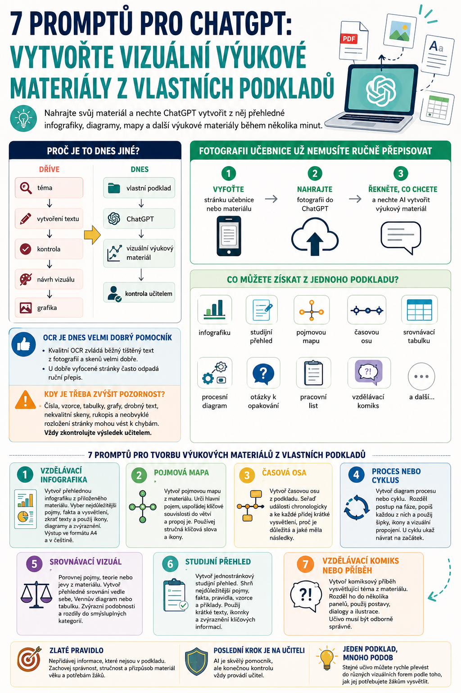

Ještě donedávna jsme při tvorbě vzdělávací grafiky pomocí AI často postupovali v několika krocích: nejprve jsme nechali vytvořit text, potom ho zkontrolovali a nakonec z něj připravovali infografiku, diagram nebo jiný vizuální materiál.
Dnes už můžeme pracovat mnohem přímočařeji.
Do ChatGPT můžeme vložit nebo nahrát vlastní podklad – například text, dokument, pracovní list, fotografii stránky učebnice, naskenovaný materiál, tabulku nebo obrázek – a požádat AI, aby z něj vytvořila nový výukový materiál.
ChatGPT umí pracovat s běžnými nahranými soubory a také interpretovat samostatně nahrané obrázky a fotografie dokumentů.
Otevřít všech sedm promptů samostatně v Knihovně Promptů →
To je pro učitele důležitá změna.
Nemusíme totiž ChatGPT říkat:
Můžeme mu dát přímo materiál, ze kterého učíme, a říct:
Tím máme mnohem větší kontrolu nad tím, z jakých informací výsledný materiál vychází.

A co naskenované materiály a fotografie?
Rozpoznávání textu z kvalitních fotografií a skenů je dnes velmi dobré a pro běžné školní materiály může být překvapivě použitelné.
Není tedy vždy nutné pracně přepisovat stránku učebnice do počítače.
Můžete například:
- vyfotit stránku učebnice,
- nahrát fotografii do ChatGPT,
- a požádat ho, aby z ní vybral hlavní informace a vytvořil z nich výukový materiál.
ChatGPT dokáže nahrané fotografie a další obrazové vstupy analyzovat a interpretovat jejich obsah.
Je ale potřeba zachovat běžnou učitelskou kontrolu. U nekvalitních skenů, velmi malého textu, složitých tabulek, vzorců, neobvyklého rozložení stránky nebo rukopisu může stále dojít k chybám. Přesná čísla z obrazových tabulek nebo složitých naskenovaných dokumentů nemusí být vždy spolehlivě získána.
Pro běžný souvislý text ale dnes není OCR něco, čeho bychom se museli při školní práci bát.
Nový jednoduchý workflow pro učitele
téma → vytvoření textu → kontrola → návrh vizuálu → grafika
Dnes můžeme často postupovat:
vlastní podklad → ChatGPT → vizuální výukový materiál → kontrola učitelem
A právě pro tento způsob práce jsou připravené následující prompty.
1. Vzdělávací infografika z vlastního podkladu
Nahrajte například stránku učebnice, vlastní poznámky, PDF nebo pracovní list.
Prompt
Materiál je určen pro [doplň ročník / věk / úroveň žáků].
Nejprve identifikuj nejdůležitější pojmy, fakta, terminologii, vysvětlení a příklady obsažené v podkladu.
Vyber pouze informace důležité pro pochopení tématu a rozděl je do logických částí.
Zkrať dlouhé texty, ale zachovej jejich původní význam.
Použij vhodné vizuální prvky, například ilustrace, ikony, jednoduché diagramy, popisky nebo zvýrazněné informační bloky.
Vytvoř výrazný nadpis, jasnou vizuální hierarchii a snadno čitelné rozložení.
Nepřeplňuj materiál textem.
Nevymýšlej nové údaje, které nejsou v podkladu, pokud nejsou nezbytné pro pochopení tématu.
Výstup vytvoř jako [A4 na výšku / A4 na šířku / jiný formát], v češtině a vhodný pro tisk i digitální použití.
Před vytvořením finálního vizuálu zkontroluj, že obsah odpovídá přiloženému podkladu.
2. Pojmová mapa z vlastního materiálu
Výborná například pro zopakování kapitoly nebo rozsáhlejšího tématu.
Prompt
Urči hlavní pojem nebo téma dokumentu a umísti jej do centra mapy.
Kolem něj uspořádej nejdůležitější související pojmy, kategorie, podtémata a vztahy, které vyplývají z přiloženého materiálu.
Používej především klíčová slova a krátká vysvětlení.
Propoj související informace pomocí jasně označených větví, čar a šipek.
Pokud to pomůže pochopení, použij jednoduché ikony nebo symboly.
Mapa musí studentům umožnit rychle pochopit, jak spolu jednotlivé části tématu souvisejí.
Nepřidávej zbytečné informace mimo přiložený zdroj.
Výslednou mapu vytvoř pro [doplň věk nebo ročník žáků] a ve formátu [doplň formát].
3. Časová osa z nahraného materiálu
Může vycházet z učebnice, historického textu, životopisu, vývoje technologie nebo třeba odborného článku.
Prompt
Vyhledej v podkladu nejdůležitější události, data, etapy, změny a zlomové okamžiky.
Seřaď je chronologicky.
Ke každé položce vytvoř krátké vysvětlení:
co se stalo,
proč je to důležité,
a případně jaký to mělo následek.
Používej pouze informace, které lze doložit z přiloženého podkladu.
Časovou osu vytvoř tak, aby byla snadno čitelná žáky [doplň ročník nebo věk].
Použij výrazná data, krátké popisky, ilustrace, ikony a vizuální propojení jednotlivých událostí.
Výstup vytvoř jako [A4 / A3 / jiný formát].
4. Proces nebo cyklus z vlastního podkladu
Ideální například pro odborné předměty, přírodovědné procesy nebo technologické postupy.
Prompt
Vytvoř z něj přehledný vzdělávací diagram.
Rozděl proces na jeho hlavní fáze a seřaď je ve správném pořadí podle přiloženého zdroje.
Ke každé fázi vytvoř krátké a srozumitelné vysvětlení.
Zvýrazni důležité vstupy, výstupy, změny, příčiny nebo následky.
Použij šipky, jednoduché symboly, ikony a ilustrace.
Pokud se jedná o cyklus, musí být z grafiky jasné, že se poslední fáze znovu propojuje s první.
Nevkládej do diagramu informace, které nejsou obsaženy v podkladu.
Výsledek přizpůsob žákům [doplň ročník nebo věk].
5. Srovnávací vizuál
Pokud máte v materiálu dvě teorie, dvě součástky, dva systémy, dva historické jevy nebo třeba dva gramatické časy, nemusíte jejich rozdíly vypisovat ručně.
Prompt
Urči jejich nejdůležitější společné znaky a rozdíly.
Rozděl je do smysluplných kategorií.
Zvol nejvhodnější vizuální formu – například srovnání vedle sebe, Vennův diagram, srovnávací tabulku nebo jiný přehledný diagram.
Používej krátké texty, zvýrazněná klíčová slova, jednoduché ikony a vizuální symboly.
Srovnání musí být možné pochopit na první pohled.
Vycházej primárně z informací v přiloženém podkladu a nevymýšlej vlastnosti nebo fakta, která v něm nejsou uvedena.
6. Studijní přehled z učebních materiálů
Tohle je jeden z nejpraktičtějších způsobů využití. Nahrajete několik stran učebnice nebo vlastní přípravu a necháte z ní vytvořit materiál k opakování.
Prompt
Vyber informace, které jsou nejdůležitější pro pochopení a zapamatování učiva.
Zahrň klíčové pojmy, důležitá fakta, definice, pravidla, vzorce nebo příklady, pokud jsou v podkladu obsaženy.
Obsah rozděl do několika přehledných tematických částí.
Použij krátké texty, zvýrazněná klíčová slova, ikony, jednoduché ilustrace nebo diagramy.
Jasně rozliš informace, které je nutné znát, od doplňujících informací.
Materiál vytvoř tak, aby jej bylo možné použít při opakování před testem nebo při samostatném studiu.
Výstup vytvoř jako A4 a přizpůsob jej žákům [doplň ročník nebo úroveň].
7. Vzdělávací komiks z učiva
I odborný nebo teoretický materiál lze převést do krátkého vizuálního příběhu.
Prompt
Hlavním cílem je vysvětlit [doplň téma nebo pojem].
Rozděl příběh do několika logicky navazujících panelů.
Použij postavy, jednoduché situace, krátké dialogy a vizuální vysvětlení.
Každý panel musí posouvat příběh a zároveň vysvětlovat část učiva.
Veškeré odborné informace musí odpovídat přiloženému podkladu.
Zábavné prvky mohou pomoci zapamatování, ale nesmí zkreslovat učivo.
Text udržuj stručný a přizpůsob jej žákům [doplň věk nebo ročník].
Jeden univerzální prompt může stačit
Nemusíme mít zvláštní prompt pro každou situaci. Pro běžnou práci často stačí i jednoduché zadání:
ChatGPT může následně samo navrhnout, zda je pro dané učivo vhodnější infografika, pojmová mapa, diagram, srovnání nebo jiný typ vizuálu.
Fotografii učebnice už nemusíte ručně přepisovat
Pro učitele je velmi praktická možnost použít jako zdroj jednoduše fotografii.
Například:
- Vyfotíte stránku učebnice.
- Nahrajete ji do ChatGPT.
- Napíšete: „Použij obsah této stránky jako zdroj a vytvoř z ní A4 studijní přehled pro žáky 2. ročníku střední školy.“
A pokračujete úpravami:
- „Zkrať text.“
- „Přidej více vizuálních prvků.“
- „Změň to na pojmovou mapu.“
- „Uprav to na A4 na šířku.“
- „Vytvoř variantu vhodnější pro žáka s horší orientací v dlouhém textu.“
Právě možnost pokračovat v úpravách stejného materiálu je jedna z největších výhod práce v konverzaci.
OCR je dnes velmi dobrý pomocník, ne poslední kontrola
Moderní rozpoznávání textu z fotografií a skenů se výrazně zlepšilo.
U dobře vyfocené stránky s běžným tištěným textem bývá výsledek natolik kvalitní, že ruční přepis často vůbec není potřeba.
To zásadně zrychluje práci se staršími učebnicemi, pracovními listy nebo materiály, které máme pouze v papírové podobě.
AI může materiál přečíst, zpracovat a přeorganizovat. Učitel ale zůstává posledním kontrolním bodem.
Zvýšenou pozornost věnujte zejména číselným údajům, odborným značkám, vzorcům, tabulkám, drobnému textu a nekvalitním skenům.
Největší změna není v obrázcích
Nejzajímavější není samotná možnost generovat hezké infografiky.
Skutečná změna spočívá v tom, že můžeme vzít vlastní učivo a během několika minut ho převést do různých forem.
Stejný podklad může vzniknout jako:
- infografika,
- studijní přehled,
- pojmová mapa,
- časová osa,
- srovnání,
- procesní diagram,
- nebo vzdělávací komiks.
Neměníme přitom nutně učivo.
Měníme způsob, jakým ho žákovi předložíme.
A právě v tom může být generativní AI pro učitele mimořádně užitečná.